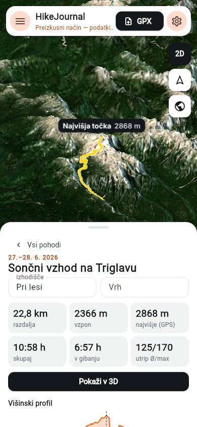
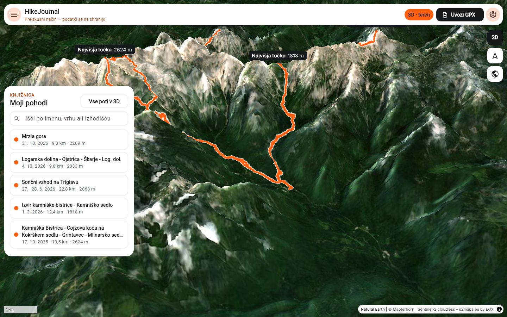
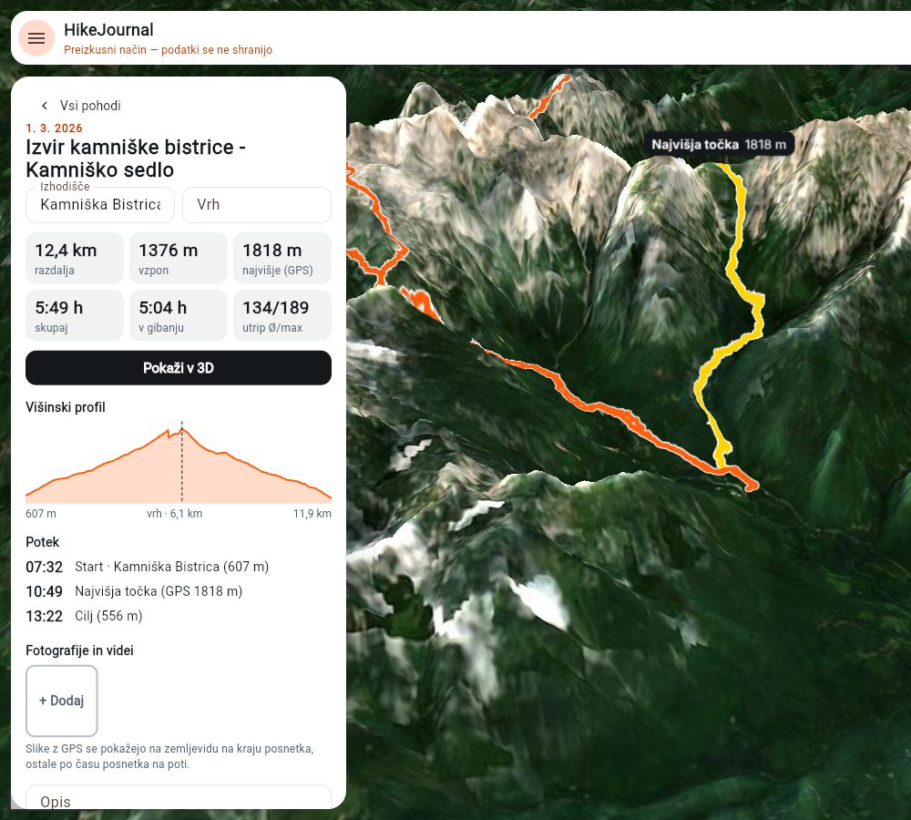

Vsi tvoji vrhovi na enem zemljevidu
Uvoziš GPX iz Strave in vsak pohod postane oranžna črta na 3D reliefu. Klikneš črto in vidiš datum, statistike, višinski profil, slike in opis tistega dne.


Trije koraki
Izvozi GPX iz Strave
Na aktivnosti v Stravi: ⋯ → Export GPX. Uvoziš lahko več datotek naenkrat. Ista aktivnost se ne uvozi dvakrat.
Uvozi v HikeJournal
Aplikacija izračuna razdaljo, vzpon, čas v gibanju in srčni utrip ter poišče ime izhodišča in vrha v OpenStreetMap.
Dodaj slike in opis
Slike z GPS se pokažejo na zemljevidu tam, kjer so bile posnete. Ostale se umestijo na pot po času posnetka.

Kot stran v dnevniku
- Statistike, ki se ujemajo s StravoRazdalja, vzpon, čas skupaj in v gibanju, utrip povprečno in največ.
- Višinski profil z označenim vrhomPotek: kdaj si začel, bil na vrhu in prišel nazaj.
- Slike in videiShranjeni v originalni kakovosti, s pomanjšanimi sličicami za hiter prikaz.
- KnjižnicaIskanje po imenu, vrhu ali izhodišču. »Vse poti v 3D« pokaže vse naenkrat.
Strava beleži treninge.
HikeJournal hrani spomine.
Strava ostane za snemanje. HikeJournal je za to, kar pride potem.
| Strava | HikeJournal | |
|---|---|---|
| Vse poti skupaj | Osebni heatmap (tudi 3D), samo z naročnino. Kot toplotna slika, posamezne poti ne odpreš. | Vsaka pot je svoja črta. Klikneš jo in odpreš ta pohod. |
| Fokus | Tempo, segmenti, forma, družbeni feed. | Gore: vrh, izhodišče, višinski profil, slike na kraju posnetka. |
| Slike in video | Pripete na aktivnost, v Stravini aplikaciji. | Na zemljevidu tam, kjer so bile posnete, v originalni kakovosti. |
| Kje so podatki | Na Stravinih strežnikih. | V mapi HikeJournal na tvojem Google Drive. |
| Cena | Brezplačno; heatmap in 3D z naročnino. | Brezplačno. 15 GB Google Drive prostora. |
HikeJournal ne snema poti in se ne poveže s Stravo samodejno: GPX izvoziš ročno.
Vse ostane na tvojem Google Drive
Ni strežnika, ni računa pri nas. Aplikacija teče v brskalniku in piše neposredno v tvoj Drive.
- Omejen dostopDovoljenje
drive.file: aplikacija vidi samo datoteke, ki jih je ustvarila sama. Ostalega Drive ne vidi. - Navadne datotekeVsak pohod je mapa z originalnim GPX, slikami, videi in
hike.json. Odpreš jih lahko tudi brez aplikacije. - Brisanje gre v košIzbrisan pohod ali slika ostane 30 dni v košu na Drive.
- OmejitvePrijava v brskalniku velja približno uro, potem klikneš »Poveži znova«. Brez interneta ne deluje.
Uvozi svoj prvi pohod
Potrebuješ Google račun in GPX datoteko. Brez prijave lahko aplikacijo preizkusiš v preizkusnem načinu: deluje vse, a se ob osvežitvi strani nič ne shrani.
Odpri aplikacijo